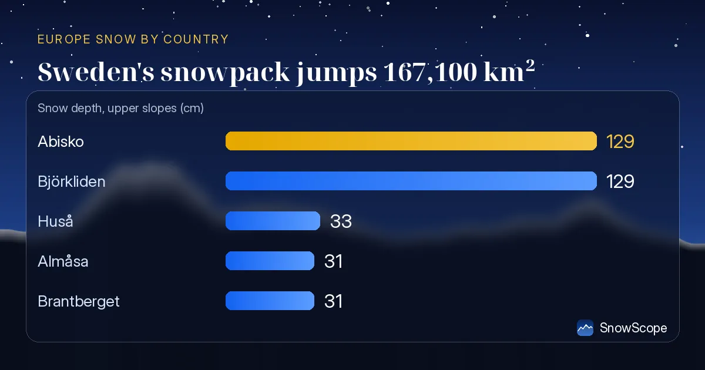

Abisko at 129 cm: Sweden's snowpack jumps 167,100 km²
Abisko holds 129 cm of snow at its peak—19 per cent above the typical amount for mid-November—and signals that early-season water is locking into mountain storage. The larger story of the past week is striking: Sweden's snow-covered area grew by 167,100 km² as a winter system moved in, expanding from less than 28 per cent of the mapped region to nearly 79 per cent.
See the live snow forecast for Abisko in the SnowScope appSnow depth, powder alerts and the 3D map, free.
Early season, early storage
Abisko's 129 cm, measured at 652 metres, is a single station point but reflects the high-altitude trend across Swedish mountains. The measurement runs 19 per cent above the typical November mid-point from past winters—a signal that this autumn's warm spell has ended and the freeze is settling in.
For a snow hydrologist, this matters: when storage rises early and stays stable, rivers maintain flow through dry months ahead. The snow here is a reserve of water already locked into mountains, no longer running downhill as rain.
| Resort | Snow depth | New snow, 72 h | Coming, next days | Top |
|---|---|---|---|---|
| Abisko | 129 cm | 3 cm | 12 cm | 902 m |
| Björkliden | 129 cm | 3 cm | 12 cm | 933 m |
| Huså | 33 cm | 4 cm | 3 cm | 677 m |
| Almåsa | 31 cm | 3 cm | 3 cm | 702 m |
| Brantberget | 31 cm | 0 cm | 7 cm | 83 m |

One week, one dramatic shift
Seven days ago, only 89,890 km² of the Swedish landscape held snow—less than 28 per cent of the region we model. Today, 256,990 km² is white—nearly 79 per cent.
The jump of 167,100 km² in a single week shows a system moving snow from sky to ground steadily and across a wide area. The snow line, the lowest point where white persists, fell to 100 metres. Winter has arrived.

Snow stacks with altitude
The snowfall does not distribute evenly. Below 500 metres, only 71 per cent of the ground holds snow and the average depth is 8 cm—a thin reserve. From 500 to 1,000 metres, coverage reaches 100 per cent and depth grows to 14 cm.
Higher still, the stacking accelerates sharply: 42 cm from 1,000 to 1,500 metres, and 68 cm above 1,500 metres. The mountains above 1,500 metres store eight times more water per square metre than lowlands, explaining why high fells like Abisko and Björkliden hold 129 cm and will feed streams and reservoirs through spring when lower ground has long since melted dry.
Fresh snow feeds steady buildup
The past three days brought up to 9 cm of new snow, with the Hemavan fjells recording 19 cm—a hotspot where air masses dumped moisture first. On 18 November, the heaviest single-day snow is forecast: 11 cm.
Over the next three days from now, 15 cm is likely. The model shows no break in this trend: the week of 24–30 November may add 18 cm more. This reliable feed of moisture will continue raising the snowpack and filling mountain reservoirs at a pace well ahead of the typical season.
Ready now, deeper soon
Abisko and Björkliden both hold 129 cm and lead all Swedish resorts. These high-latitude sites are ready for the season now. Resorts lower down—Huså (33 cm), Almåsa (31 cm), and Brantberget (31 cm)—have made solid starts but lack the depth needed yet.
The encouraging fact is that all five measured resorts run above normal for the date. By late November, as forecast snow keeps falling, even the lower sites will have robust bases, and the high fells will approach the deep packs that sustain runoff into summer.
Tips for skiers
- Altitude dictates snow depth now: 68 cm above 1,500 metres versus 8 cm below 500 metres. Choose high fells for reliable bases; expect gaps in cover and exposed ground in lowlands.
- Fresh snow is forecast on 18 November (11 cm). Before leaving marked runs after heavy snow, check the official avalanche forecast for your area.
- Early-season snow often sits on thin bases or rocks beneath. Coverage below 500 metres is only 71 per cent—bare patches are common. Travel carefully in lower terrain.
- Abisko and Björkliden are ready at 129 cm. Lower resorts need more snow to stabilize. If flexible, wait until after 18 November when incoming falls firm up the base.
About these numbers
Resort snow depths are the deepest snow on the resort's upper slopes from the SnowScope snow model (about 1 km, run of 16 November); they are estimates for an area, not a measurement at one point. Station values are measurements on the date shown. Forecasts can change. Always read the official avalanche bulletin before going off-piste.
Cite this report
For research, teaching or the press: the numbers and charts are free to reuse under CC BY 4.0 with this citation.
SnowScope (2026), Abisko at 129 cm: Sweden's snowpack jumps 167,100 km², https://snowscope.app/blog/en/2026/11/sweden-snow-report-16-november-2026.html, accessed 2026-11-16
SnowScope (Atlas Labs). (2026, November 16). Abisko at 129 cm: Sweden's snowpack jumps 167,100 km². SnowScope snow reports. https://snowscope.app/blog/en/2026/11/sweden-snow-report-16-november-2026.html
BibTeX
@misc{snowscope2026swedensnowreport16novemb,
author = {{SnowScope (Atlas Labs)}},
title = {Abisko at 129 cm: Sweden's snowpack jumps 167,100 km²},
year = {2026},
month = nov,
howpublished = {\url{https://snowscope.app/blog/en/2026/11/sweden-snow-report-16-november-2026.html}},
note = {Published 2026-11-16 20:42 UTC; accessed 2026-11-16}
}· CC BY 4.0 · Methods, data and tools →
Abisko: snow and temperature by height, this winter vs last (tools) →
Follow Abisko
Free: a message when fresh snow is coming, and the forecast every morning.
More snow reports

Seven independent ski areas in the West where an adult day ticket costs from $49 to $98.8 on weekdays, compared with the snow they usually have in December.

Bogus Basin snow check for Boise skiers on 13 November 2026: no snow on the ground yet, rain and mixed snow this weekend with a snow level near 6,300 to 6,800 ft, then colder air and about 8 in at the summit by next week.